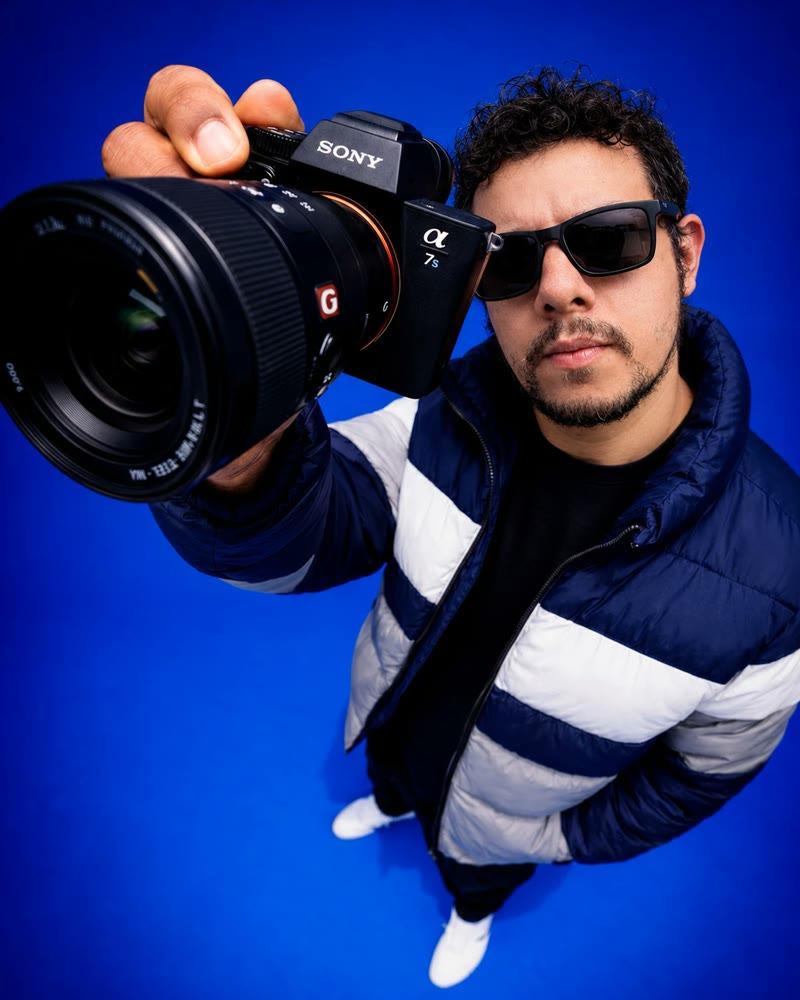

Edição, motion e IA no mesmo editor.
Sou Anderson Brito, editor de vídeo com 10+ anos de audiovisual e Marketing pela FGV. Já faço exatamente o que a Lunar pede: vídeo para redes, peças institucionais, cobertura de eventos, motion design e IA aplicada na edição.

Um filme de época inteiro, feito com IA.
IA aplicada à edição"Bomba Atômica": roteiro, geração de cenas, direção e edição feitos por mim. Nada foi filmado. É o tipo de peça que, com IA, sai em dias e não em semanas, e que eu levo para qualquer cliente da Lunar: do institucional ao agro.
- Geração de vídeo e imagem: Seedance, Kling, Veo, Nano Banana.
- Voz e narração com IA, inclusive clonagem de voz.
- Fluxo híbrido IA + Premiere: a IA acelera, o acabamento é de editor.
Redes sociais, eventos e institucional.
O que a vaga pede, já entregue para marcas reais.Jantar do Clube do Franchising
Convite com cara de evento premium para os grandes franqueadores do Brasil, em Alphaville (SP).
Boali · inauguração Vila Olímpia
Rede de alimentação saudável, cliente da Escola do Franchising. Evento virando conteúdo para as redes.
Viver+ Praia
Ação na praia com marca parceira, editada com narração e tipografia animada. Feito na WooB.
WooB · mensagem da marca
Montagem acelerada com IA e acabamento no Premiere, para as redes da agência.
Eduardo Schroeder · Cheirin Bão
O fundador encontra a versão jovem de si mesmo. Voz clonada e cenas geradas por IA.
Agência, franquias, criador de conteúdo e FGV.
TrajetóriaWooB
Edição de vídeos para redes e criativos de tráfego da agência e dos seus clientes, com motion design e IA generativa (personagens, cenas e narração).
Escola do Franchising
Grupo A Trinca (Flávio Augusto, Joel Jota e Caio Carneiro). Criativos, Reels, videoaulas e cobertura de eventos para cerca de 200 franqueados, como Boali e Cheirin Bão.
Doti
Conteúdo com IA generativa, do roteiro à publicação. Consegui parcerias com grandes marcas como CazéTV e TNT Sports, com vídeos virais de comédia e futebol.
FGV · Vice-Presidência
Redes sociais e site do Vice-Presidente, material para palestras, entrevistas e audiências públicas. Comunicação institucional de alto nível.
Cada requisito, já na prática.
Encaixe com a vagaUso diário nos quatro, além do Photoshop.
Tipografia animada, legendas dinâmicas e vinhetas para redes.
Geração de cenas, voz e automação da montagem.
Inaugurações, ações de marca e jantares de luxo para franqueadores.
Rotina remota com entregas diárias para vários clientes ao mesmo tempo.
Linguagem institucional e de campo que aprendo rápido: com IA, consigo cenas de lavoura, máquinas e produtor sem depender de filmagem.
contato@andersonbrito.com · @andersonbrito.mp4 · linkedin.com/in/andbrito